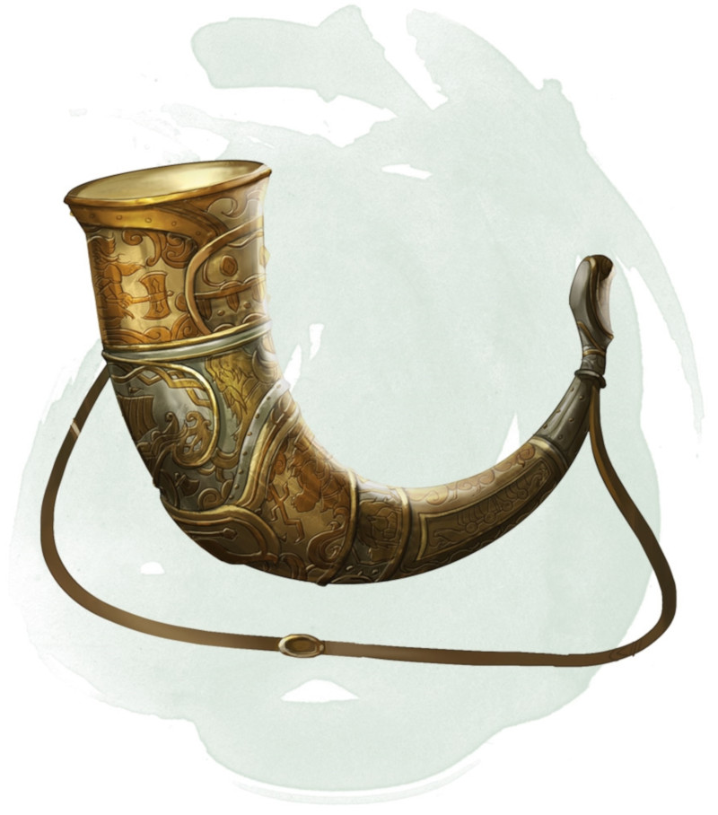

Horn of Valhalla
[ Cor du Valhalla ]
Wondrous item, rare (silver or brass), very rare (bronze), or legendary (iron)
You can use an action to blow this horn. In response, warrior spirits from the Valhalla appear within 60 feet of you. They use the statistics of a berserker. They return to Valhalla after 1 hour or when they drop to 0 hit points. Once you use the horn, it can't be used again until 7 days have passed.
Four types of horn of Valhalla are known to exist, each made of a different metal. The horn's type determines how many berserkers answer its summons, as well as the requirement for its use. The DM chooses the horn's type or determines it randomly.
If you blow the horn without meeting its requirement, the summoned berserkers attack you. If you meet the requirement, they are friendly to you and your companions and follow your commands.
Four types of horn of Valhalla are known to exist, each made of a different metal. The horn's type determines how many berserkers answer its summons, as well as the requirement for its use. The DM chooses the horn's type or determines it randomly.
| d100 | Horn Type | Berserkers Summoned | Requirement |
|---|---|---|---|
| 01-40 | Silver | 2d4 + 2 | None |
| 41-75 | Brass | 3d4 + 3 | Proficiency with all simple weapons |
| 76-90 | Bronze | 4d4 + 4 | Proficiency with all medium armor |
| 91-00 | Iron | 5d4 + 5 | Proficiency with all martial weapons |
If you blow the horn without meeting its requirement, the summoned berserkers attack you. If you meet the requirement, they are friendly to you and your companions and follow your commands.
Dungeon Master´s Guide (SRD)
